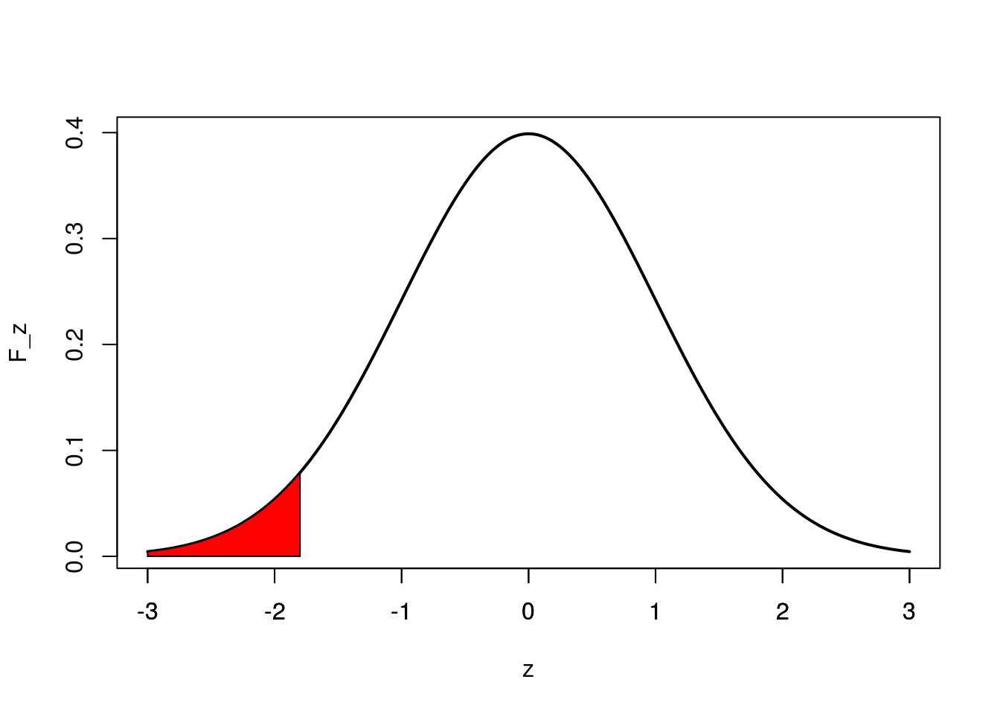
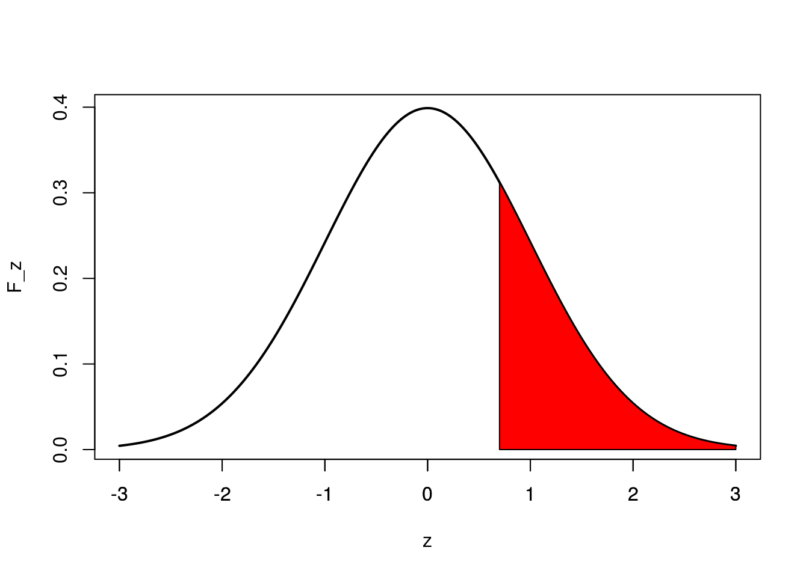
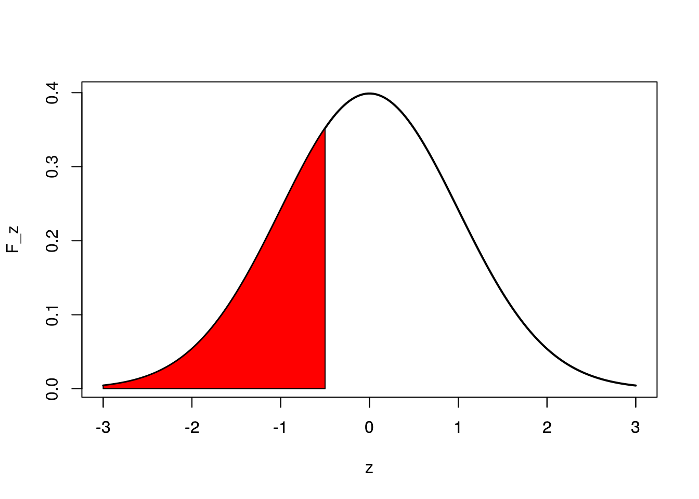

Solución Tarea # 7
Para la parte 1 usaré la siguiente función.
plot_area <- function(a,b){
z=seq(-3,3,length=200)
F_z=dnorm(z,mean = 0,sd=1)
plot(z,F_z,type="l", lwd=2, col="black")
z=seq(a,b,length=200)
F_z=dnorm(z,mean = 0,sd=1)
polygon(c(a,z,b),c(0,F_z,0),col="red")
axis(side = 1, at=-3:3)
}1. Supongamos que \(Z\) tiene una distribución normal estándar, es decir \(Z \sim Normal(0,1)\). Use RStudio o una tabla de probabilidades \(Z\) para encontrar (Haga una gráfica para explicar sus resultados);
\(P(Z < -1.8)\)
pnorm(-1.8)## [1] 0.03593032plot_area(-3,-1.8)
\(P(Z > 0.7)\)
1 - pnorm(0.7)## [1] 0.2419637plot_area(0.7,3)
El percentil \(z_p\) tal que \(P(Z < z_p)=0.3085\)
Zp <- qnorm(0.3085)
Zp## [1] -0.5001066plot_area(-3,Zp)
2. El “Craps”, también conocido como “Pase Inglés” es un famoso juego de azar que consiste en apostar al resultado de la suma al lanzar un par de dados legales. Este juego tiene varias reglas, pero si las asumimos, el problema se hace muy complicado. Nosotros solo vamos a definir dos reglas para simplificar el problema:
Regla 1: Si el resultado de la suma de los dos dados es {5, 7 o 11} el jugador gana y cobra su apuesta :)
Regla 2: Si el resultado de la suma de los dos dados es {2, 3, 4, 6, 8, 9, 10 o 12} el jugador pierde su dinero y se termina el juego :(
Suponga un jugador de Craps que juega 30 veces en una noche.
Calcule directamente mediante la distribución Binomial la probabilidad de que el jugador gane en más de 5 ocasiones.
Tenemos que calcular la probabilidad de éxito. Todas las posibilidades en las que el jugador de Craps puede ganar, son:
\[E = \{(2,3),(3,2),(1,4),(4,1),(3,4),(4,3),(2,5),(5,2),(6,1),(1,6),(6,5),(5,6)\}\]
En total, hay 12 posibilidades de 36. Por lo tanto, \(p=12/36\).
Entonces:
\[P(X > 5)= 1- P(X\leq 5)\]
\[P(X > 5)= 1- \Big[P(X =0) + P(X =1) + P(X =2) + P(X =3) + P(X =4) + P(X =5) \Big]\]
Tenemos que,
\(P(X = 0)={30 \choose 0}(\frac{12}{36})^0(\frac{24}{36})^{30}=0.0000052151\)
\(P(X = 1)={30 \choose 1}(\frac{12}{36})^1(\frac{24}{36})^{29}=0.00007822\)
\(P(X = 2)={30 \choose 2}(\frac{12}{36})^2(\frac{24}{36})^{28}=0.00056714\)
\(P(X = 3)={30 \choose 3}(\frac{12}{36})^3(\frac{24}{36})^{27}=0.00264666\)
\(P(X = 4)={30 \choose 4}(\frac{12}{36})^4(\frac{24}{36})^{26}=0.00893248\)
\(P(X = 5)={30 \choose 5}(\frac{12}{36})^5(\frac{24}{36})^{25}=0.02322445\)
Luego,
\[P(X > 5)= 1- \Big[0.0000052151 + 0.00007822 + 0.00056714 + 0.00264666 + 0.00893248 + 0.02322445 \Big]\]
\[P(X > 5)= 1 -0.03545417=0.9645458\]
Calcule directamente mediante la distribución Binomial la probabilidad de que el jugador gane exactamente 10 veces.
\[P(X = 10)={30 \choose 10}\bigg(\frac{12}{36}\bigg)^{10}\bigg(\frac{24}{36}\bigg)^{20}=0.1530152\]
Use la distribución Normal para aproximar las probabilidades que encontró en a) y b). ¿La aproximación en este caso es buena o mala? ¿Por qué?
Para la parte a)
\(\mu = np=30*12/36=10\)
\(\sigma = \sqrt{np(1-p)}=\sqrt{30*(12/36)*(1-12/36)}=\sqrt{6.666667}=2.581989\)
Entonces,
\[X \sim Normal(10,2.581989)\]
\[P(X > 5) = 1 - P(X \leq 5) = \]
sumando 0.5 por la corrección de la aproximación tenemos:
\[1 - P(X < 5.5)=\]
\[ 1 - P\Big(Z < \dfrac{5.5 - 10}{2.581989}\Big)=\]
\[ 1 - P\Big(Z < -1.742842\Big)=\]
1 - pnorm(-1.742842)## [1] 0.9593194Así, usando la aproximación normal obtenemos:
\[P(X > 5)= 0.9593194\]
Para la parte b)
\[P(X = 10) = P(9.5 < X < 10.5)=\]
\[=P(X < 10.5) - P(X < 9.5)=\]
\[ P\Big(Z < \dfrac{10.5 - 10}{2.581989}\Big) - P\Big(Z < \dfrac{9.5 - 10}{2.581989}\Big) =\]
\[=P(Z < 0.193649) - P(Z < -0.1936492)=\]
pnorm(0.193649) - pnorm(-0.1936492)## [1] 0.1535494En ambos casos se encontró una aproximación relativamente cercana. Esto se da ya que la probabilidad de éxito no está tan lejos 0.5.
3. El siguiente código genera 30 datos que simulan salarios anuales en Puerto Rico.
set.seed(123)
salario <- sample(22000:85000,size = 30,replace = TRUE)
print(salario)## [1] 40117 71664 47765 77630 81250 24870 55271 78223 56740 50767 82281
## [12] 50560 64687 58076 28484 78689 37503 24649 42659 82134 78041 65647
## [23] 62352 84639 63310 66638 56276 59431 40217 31268Queremos inferir algunas cosas sobre el salario promedio en Puerto Rico. Conteste las siguientes preguntas con base en los datos salario
¿Podemos usar el TLC para aproximar la distribución del salario promedio en Puerto Rico?, ¿Por qué?
Sí, porque \(n\) es igual a 30, y cumple con la condición del TLC.
¿Cuál es la distribución del salario promedio en Puerto Rico?
La media muestral es:
mean(salario)## [1] 58061.27Como n es igual a 30, podemos estimar \(\sigma\) usando la muestra.
sd(salario)## [1] 18356.07Por el TLC, tenemos que \(\mu_{\bar{X}}=\mu=58061.27\) y que \(\sigma_{\bar{X}}=\dfrac{S}{\sqrt{n}}=\dfrac{18356.07}{\sqrt{30}}=3351.345\)
\[\bar{X} \sim Normal\bigg(58061.27,\dfrac{18356.07}{\sqrt{30}} \bigg)\]
¿Cuál es la probabilidad de encontrar un salario promedio mayor a \(\$ 80\) mil?
\[P(\bar{X} > 80000) = 1 - P(\bar{X} < 80000)\]
\[ 1 - P\Bigg(Z < \dfrac{80000 - 58061.27 }{\frac{18356.07}{\sqrt{30}}}\Bigg)\]
\[ 1 - P\Big(Z < \dfrac{21938.73}{3351.345}\Big)\]
\[ 1 - P\Big(Z < 6.546246\Big)\]
\[ 1 - 1=0\]
Entonces,
\[P(\bar{X} > 80000) = 0\]
4. Suponga que los pesos de recién nacidos se distribuyen normal con media 2900 gramos y desviación estándar 1200 gramos. Es decir \(X \sim Normal(2900, 1200)\). Sí se tomó una muestra de 17 recién nacidos. Conteste:
¿Es necesario usar el TLC para aproximar la distribución del peso promedio en recién nacidos? Explique!
No es necesario usar el TLC, porque ya conocemos que la población es normal con media y varianza conocidas.
¿Cuál es la distribución del peso promedio muestral en recién nacidos?
Como la población es Normal con media \(\mu=2900\) y desviación \(\sigma=1200\), entonces,
\(\mu_{\bar{X}}=\mu=2900\) y \(\sigma_{\bar{X}}=\dfrac{\sigma}{\sqrt{n}}=\dfrac{1200}{\sqrt{17}}=291.04\)
\[\bar{X} \sim Normal\bigg(2900,\dfrac{1200}{\sqrt{17}}\bigg)\]
¿Cuál es la probabilidad de encontrar un peso promedio muestral entre 2500 y 3800 gramos?
\[P(2500 <\bar{X} < 3800) =\]
\[P(\bar{X} <3800) - P(\bar{X} <2500)=\]
\[ P\Bigg(Z < \dfrac{3800- 2900}{\frac{1200}{\sqrt{17}}}\Bigg) - P\Bigg(Z < \frac{2500- 2900}{\frac{1200}{\sqrt{17}}}\Bigg) =\]
\[ P\Big(Z < \dfrac{900}{291.04}\Big) - P\Big(Z < \dfrac{-400}{291.04}\Big) =\]
\[ P\Big(Z < 3.0923\Big) - P\Big(Z < -1.3743\Big) =\]
pnorm(3.0923) - pnorm(-1.3743)## [1] 0.9143327